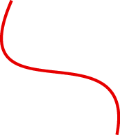

<!DOCTYPE html>


<html>


    <head>

        <title>Map page</title> <!--Title of the tab-->


        <!--General invormation about the page (metadata)-->
        <meta charset="UTF-8"> <!--encodage-->
        <meta name="author" content="Hugo Dalle"> <!--author name-->
        <meta name="viewport" content="width=device-width, 
        	initial-scale=1.0, maximum-scale=1.0, user-scalable=no"> <!--Enable a coret display of the page on mobil devices-->

        
			<link rel="stylesheet" href="https://unpkg.com/leaflet@1.7.1/dist/leaflet.css"
				integrity="sha512-xodZBNTC5n17Xt2atTPuE1HxjVMSvLVW9ocqUKLsCC5CXdbqCmblAshOMAS6/keqq/sMZMZ19scR4PsZChSR7A=="
   				crossorigin=""/> <!--Call the leaflet CSS sript file (library)-->
   			<script src="https://unpkg.com/leaflet@1.7.1/dist/leaflet.js"
   				integrity="sha512-XQoYMqMTK8LvdxXYG3nZ448hOEQiglfqkJs1NOQV44cWnUrBc8PkAOcXy20w0vlaXaVUearIOBhiXZ5V3ynxwA=="
   				crossorigin=""></script> <!--Call the leaflet JS sript file (library)-->

        <link rel="stylesheet" href="css/style.css"> <!--Call the CSS style file-->

        <script src="js/script.js"></script>  <!--Call the JS sript file-->

    </head>


    <body>

    	<div id="map"></div>

    	<script> 			


    		let map = L.map ("map").setView([50.081040,14.419617], 12);

    		/////////////////Back ground Layers
    		let Stamen_Terrain = L.tileLayer('https://stamen-tiles-{s}.a.ssl.fastly.net/terrain/{z}/{x}/{y}{r}.{ext}', {
    			attribution: 'Map tiles by <a href="http://stamen.com">Stamen Design</a>, <a href="http://creativecommons.org/licenses/by/3.0">CC BY 3.0</a> &mdash; Map data &copy; <a href="https://www.openstreetmap.org/copyright">OpenStreetMap</a> contributors',
    			subdomains: 'abcd',
    			minZoom: 0,
    			maxZoom: 18,
    			ext: 'png'});

 			let	OpenStreetMap_Mapnik = L.tileLayer('https://{s}.tile.openstreetmap.org/{z}/{x}/{y}.png', {
	 				maxZoom: 19,
	 				attribution: '&copy; <a href="https://www.openstreetmap.org/copyright">OpenStreetMap</a> contributors'});

	 		let	Esri_WorldImagery = L.tileLayer('https://server.arcgisonline.com/ArcGIS/rest/services/World_Imagery/MapServer/tile/{z}/{y}/{x}', {
	 				attribution: 'Tiles &copy; Esri &mdash; Source: Esri, i-cubed, USDA, USGS, AEX, GeoEye, Getmapping, Aerogrid, IGN, IGP, UPR-EGP, and the GIS User Community'});


 			let baseMaps = {
 				"Stamen Terrain": Stamen_Terrain,
 				"OpenStreetMap Mapnik": OpenStreetMap_Mapnik,
 				"Esri WorldImagery": Esri_WorldImagery
 			};


			let cyclo = "https://opendata.iprpraha.cz/CUR/DOP/DOP_Cyklotrasy_l/WGS_84/DOP_Cyklotrasy_l.json"
    		fetch(cyclo)
    			.then(function(response) {
        			return response.json();
    			})
    			.then(function(data) {
        			L.geoJSON(data, {
        				style: {
        					color: "#e60000",
        					weight: 1
        				}
        			}).addTo(map);
    			});

    		let park = "https://opendata.iprpraha.cz/CUR/DOP/DOP_ZachParkoviste_b/WGS_84/DOP_ZachParkoviste_b.json"
    		fetch(park)
    			.then(function(response) {
        			return response.json();
    			})
    			.then(function(data) {
        			L.geoJSON(data).addTo(map);
    			});


    		L.tileLayer("https://{s}.tile.openstreetmap.org/{z}/{x}/{y}.png", { //link to the OpenStreetMap layer
    			attribution: '&copy; <a href="https://www.openstreetmap.org/copyright">OpenStreetMap</a>', //refere to the Openstreet map "copy rightand License"
    			maxZoom: 19
    		}).addTo(map); //add the tile layer to the map object previously created (applicable to any type of layer)


 			L.control.layers(baseMaps).addTo(map);


    		let legend = L.control({position: "bottomleft"}); //creation of an object named "legend" + position
    			legend.onAdd=function() { // .onAdd method
    				let div = L.DomUtil.create("div", "legend"); // Creation of a nex <div> element

				    div.innerHTML = 
				        '<p><b>Legend</b></p><hr>' +
				        '<div id=point class=divleg>Parking</div>'+
				        '<div id=line class=dicleg>Bicycle routes marked</div><hr>'+
				        ''
				    return div;}
				 legend.addTo(map)
				 


		</script>

    </body>


</html>